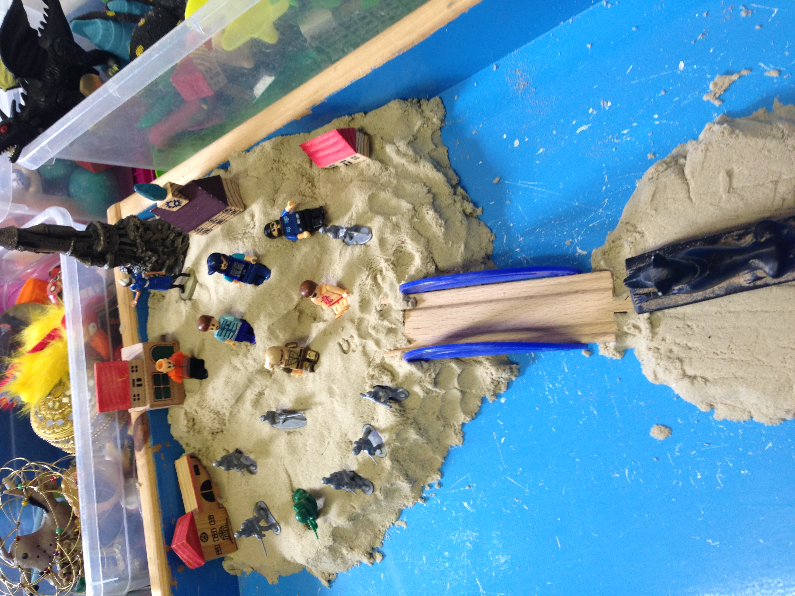

For children and young people, play is a natural way to express feelings, process experiences, and build resilience. Play therapy offers a safe, nurturing environment where they can explore their inner world without needing to find the “right” words.
Play therapy may support
- Worries, fears, and big emotions
- Behaviour linked to emotional distress
- Family changes or school challenges
- Trauma, loss, or overwhelming experiences
- Social, communication, or sensory needs

What sessions may include
- Sand, art, stories, puppets, movement, imaginative play
- A sensory‑safe, child‑led environment
- Gentle, attuned therapeutic presence
Play Therapy in Schools & Community Settings
Until my dedicated therapy room is ready, I am offering play therapy sessions within schools and suitable community spaces across Cornwall. I work closely with staff to create emotionally safe, nurturing environments where children can explore and express themselves through play.
I bring all necessary resources and tailor each session to the child’s individual needs. This flexible approach ensures consistency and emotional safety, even without a fixed base.
This is a temporary offer while my therapy space is being established.
Enquire about school‑based play therapy